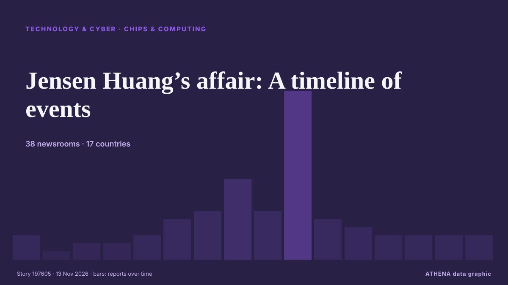

Jensen Huang’s affair: A timeline of events

As espionage targets go, Jensen Huang is perhaps one of the least surprising on Earth. από The Verge
Αναφέρθηκε ανεξάρτητα από 38 μέσα σε 17 χώρες από τις 9 Νοε, πρώτο το New York Times Business· η κάλυψη εξασθενεί. Το ATHENA εκτιμά τον κίνδυνο μέτριο (3.6/10), κυρίως λόγω της σοβαρότητάς του και της εμβέλειάς του. Βεβαιότητα 87% (υψηλή): το επιβεβαιώνουν 38 ανεξάρτητα μέσα, μέση αξιοπιστία 72%. Μέσα ανά χώρα: Ηνωμένες Πολιτείες (15), Ινδία (5), Ταϊβάν (4). Κάλυψη: 9 Νοε έως 11 Νοε, 55 ώρες.
Γιατί έχει σημασία: Οι εξελίξεις στην τεχνολογία και την κυβερνοασφάλεια διαμορφώνουν την ασφάλεια, τον ανταγωνισμό και τους κανόνες της ψηφιακής ζωής.
Τι άλλαξε: 10 νέες αναφορές από 7 μέσα στο 24ωρο έως 13 Νοε.
Πρώτη διατύπωση: U.S. Commerce Dept. Inquiry Into Megaspeed Was Halted After Nvidia Intervention
Οι τίτλοι των ειδήσεων παρουσιάζονται στα αγγλικά, όπως δημοσιεύτηκαν.
Πώς να διαβάσετε αυτή τη σελίδα
- Τι διαβάζετε
- 38 μέσα σε 17 χώρες ανέφεραν αυτό το γεγονός. Οι αναφορές παρακάτω εμφανίζονται με τη σειρά που δημοσιεύτηκαν· κάθε τίτλος ανοίγει το αρχικό άρθρο. Το ATHENA δεν γράφει δικά του ρεπορτάζ.
- Η εκτίμησή μας
- Για την καταγραφή — Οι αναφορές περιγράφουν ένα ολοκληρωμένο, εσωτερικό, εμπορικό ή προσωπικό ζήτημα. Το καταγράφουμε ώστε να βλέπετε ποιος το ανέφερε και πότε. Δεν παρακολουθούμε εδώ κίνδυνο ευρύτερης σύγκρουσης.
- Πόσα στοιχεία υπάρχουν
- Επαρκής Αρκετά ανεξάρτητα μέσα συμφωνούν, αλλά η εικόνα μπορεί ακόμη να αλλάξει.
Αφού αφαιρεθούν οι επαναλήψεις, τα άσχετα και τα παλιά στοιχεία, υπολογίζονται 21 από τις 40 αναφορές που παρατίθενται· το 60% των τίτλων αντιστοιχεί στο γεγονός.
- Τι δεν σημαίνει
- Το ATHENA μετρά πώς καλύπτεται ένα γεγονός, όχι αν είναι αληθές. Δεν είναι πρόβλεψη, κρίση για το ποιος έχει δίκιο ή συμβουλή.
- Τι θα την άλλαζε
- Αναφορές από άλλα ανεξάρτητα μέσα που δείχνουν διαφορετική εξέλιξη, ή σαφής επιβεβαίωση ή διάψευση από επίσημη πηγή.
Εκτίμηση R2 · ανανεώνεται με κάθε ενημέρωση της σελίδας. Το ATHENA δεν έχει δημοσιεύσει ακόμη ιστορικό επιδόσεων για αυτές τις εκτιμήσεις· όταν το κάνει, θα συνδέεται εδώ.
Με μια ματιά
Επιλέγεται, βαθμολογείται και γράφεται από τη δημοσιευμένη μεθοδολογία του ATHENA. Κανένας συντάκτης δεν παρεμβαίνει σε μεμονωμένα γεγονότα. Πώς παράγεται ›
| 09 Nov 16:02 UTC | 2 |
|---|---|
| 09 Nov 22:02 UTC | 0 |
| 10 Nov 04:02 UTC | 1 |
| 10 Nov 10:02 UTC | 1 |
| 10 Nov 16:02 UTC | 2 |
| 10 Nov 22:02 UTC | 4 |
| 11 Nov 04:02 UTC | 5 |
| 11 Nov 10:02 UTC | 9 |
| 11 Nov 16:02 UTC | 5 |
| 11 Nov 22:02 UTC | 20 |
| 12 Nov 04:02 UTC | 4 |
| 12 Nov 10:02 UTC | 3 |
| 12 Nov 16:02 UTC | 2 |
| 12 Nov 22:02 UTC | 2 |
| 13 Nov 04:02 UTC | 2 |
| 13 Nov 10:02 UTC | 2 |
| 11 Nov 22:29 UTC | 3.2 |
|---|---|
| 11 Nov 22:36 UTC | 2.0 |
| 11 Nov 23:19 UTC | 3.5 |
| 13 Nov 13:10 UTC | 3.6 |
Γιατί αυτοί οι αριθμοί
Σημασία
Κίνδυνος
Βεβαιότητα
Η κάλυψη — ποιος το ανέφερε και πότε
ο τίτλος όπως δημοσιεύτηκε · ανοίγει το πρωτότυπο- New York Times Business · Ηνωμένες ΠολιτείεςU.S. Commerce Dept. Inquiry Into Megaspeed Was Halted After Nvidia Intervention
- The Next Web · Κάτω ΧώρεςCommerce halted its Megaspeed probe after Nvidia stepped in, NYT reports
- DigiTimes Asia · ΤαϊβάνNvidia legal chief accused of interfering in Megaspeed probe
- The Next Web · Κάτω ΧώρεςMoonshot AI rented Nvidia’s top chips in China, Bloomberg reports
- The Verge · Ηνωμένες ΠολιτείεςThe US is winning the AI race. Jensen Huang could have blown it
- ABC News Australia · ΑυστραλίαSouth Road scandal to become subject of parliamentary inquiry
- New Straits Times · ΜαλαισίαTighter scrutiny expected on Malaysia as Nvidia scandal spills over
- DigiTimes Asia · ΤαϊβάνCommentary: Can Nvidia's founder-centric brand model hold up
- Times of India · ΙνδίαJensen Huang backed nepotism in 2025 saying it doesn't bother him
- IOL · Νότια ΑφρικήNvidia CEO’s affair sparks $250bn market dip fears: Savvy investors eye discounted AI chip giant
- City A.M. · Ηνωμένο ΒασίλειοNvidia scandal proves why a good CEO is a paranoid one
- Israel Hayom (English) · ΙσραήλNvidia affair led to special Air Force One briefing to Trump
- Times of India · ΙνδίαAt executive meeting post affair revelation, Nvidia CEO apologised but took no questions
- DigiTimes Asia · ΤαϊβάνMoonshot AI reportedly accessed restricted Nvidia chips in China despite US ban
- The Business Times · ΣιγκαπούρηFive reasons why Nvidia matters – and what’s now at stake
- The Independent · Ηνωμένο ΒασίλειοInside the firm at the heart of Nvidia scandal accused of smuggling chips to China
- Livemint · ΙνδίαJensen Huang controversy: AI-generated 'Huang's Honeypot' trailer turns spy allegations into fiction
- NDTV · ΙνδίαAlice Huang's China Connections, A Financier's Scandals And The Nvidia Link
- Business Insider · Ηνωμένες ΠολιτείεςMichael Burry says he's still bearish after Nvidia's 10% plunge — but the market may see it as a 'heck of a trade' soon
- ThisDay (Nigeria) · Νιγηρία$4.5tn Nvidia Faces Major Storm After CEO Admits to Inappropriate Relationship with Alleged Spy
- Wired · Ηνωμένες ΠολιτείεςChina’s Nvidia Honeypot Isn’t Surprising. Jensen Huang Fell for It Anyway
- The Independent · Ηνωμένο ΒασίλειοWho is Alice Huang? The alleged spy at center of Nvidia CEO affair scandal
- CBS News (World) · Ηνωμένες ΠολιτείεςCompany under scrutiny for ties to Nvidia and China
- Livemint · Ινδία‘Pillow talk’ espionage? How alleged Chinese spy Alice Huang may have gained access to Jensen Huang’s Nvidia insights
- Fast Company · Ηνωμένες ΠολιτείεςNvidia CEO Jensen Huang’s involvement with an alleged Chinese spy is the stuff of Hollywood thrillers. These 10, for example
- New York Times Business · Ηνωμένες ΠολιτείεςTrump Officials Clashed Over Megaspeed, Firm at Heart of Nvidia Affair
- Taipei Times · ΤαϊβάνImplications of Huang’s scandal
- Business Insider · Ηνωμένες ΠολιτείεςIs she a spy, or just out of your league? How to avoid getting honeypotted
- Inc. · Ηνωμένες ΠολιτείεςThere’s a Simple Way to Remember How to Pronounce ‘Nvidia.’ It’s a Tiny Bit Scandalous
- to vima · ΕλλάδαNvidia is Preparing to Oust CEO Jensen Huang
- Tom's Hardware · Ηνωμένες ΠολιτείεςJensen Huang now accused of affair with Nvidia executive who reported to him, alleged cover-up attempt
- The Verge · Ηνωμένες ΠολιτείεςNvidia is reportedly preparing to fire Jensen Huang
- CNBC World · Ηνωμένες ΠολιτείεςJensen Huang affair in D.C.: Resignation calls and moves to tighten Nvidia China exports
- MyJoyOnline · ΓκάναNvidia CEO Huang had relationship with executive who reported to him, NYT reports
- The Hill · Ηνωμένες ΠολιτείεςTrump embraces Huang as espionage scandal shakes Nvidia
- NBC News (World) · Ηνωμένες ΠολιτείεςNew report alleges that Jensen Huang had relationship with an Nvidia executive
- The Straits Times · ΣιγκαπούρηJensen Huang said to have had relationship with Nvidia executive Kimberly Powell, who reports to him
- TechCrunch · Ηνωμένες ΠολιτείεςJensen Huang accused of having another affair — with an Nvidia exec
- Data Center Dynamics · Ηνωμένο ΒασίλειοNvidia's Jensen Huang accused of second affair with staffer, board considers ouster
- South China Morning Post · Χονγκ Κονγκ ΕΔΠ ΚίναςJust how deep do Alice Huang’s Hong Kong business links run amid the Nvidia affair?